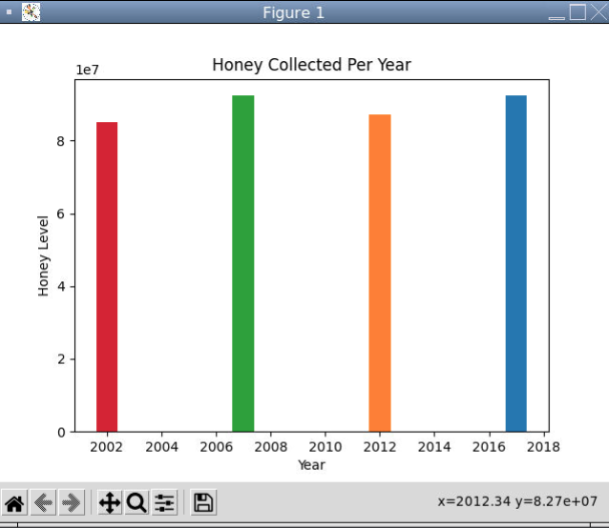

Home
Portfolio
About Me

In this project you build your own pizza using python, first you are prompted with if you want pizza in the first place and if you do a pizza gets created
and from their you decide what toppings you want on it based on questions asked and than it shows you your completed pizza

In this project there is one objective and that is not to lose, and in order to not lose you must choose 1 of the three cups in hopes that that its the correct one because
if it is not the correct one than you will lose a heart and you only have 2 tries till you lose so you have to choose wiseley, and users are allowed to choose their own cups

In this project we worked on creating a platformer game where you have a character you control via WASD your character is a circle and using that circle you will be able to
complete the 3 missions given by using the keys to dodge obstacles such as resetting red triangles and make your way to the vicotry flag and making your way to eventually beating the game


In this project we had a rover travel to a unknown planet and we had to determine what enviorment it was in using built in sensors that it had. First for each of the 4 enviorments we created
4 different graphs estimating how the sensors would look like like those specific enviorments. Using the data from the rover we split it up based on the type of sensor it was and then we compared
the sensor data the rover sent over to our estimated graphs of what the sensors would look like for each enviorment and we matched it up to Inland Forests. Due to the fact that we can match it up
because of the fact that if we compare the tempature we can see that in both it is constant and varies slightly. If we compare the sound we can see that it matches because of the thunderstorms and
varying wind weather and it matches. We can see that the light matches as it goes up during the daytime as well. Therefore becausae of these comparisons we believe that it's Inland Forests

In this project we worked on creating a platformer game where you have a character you control via WASD your character is a circle and using that circle you will be able to
complete the 3 missions given by using the keys to dodge obstacles such as resetting red triangles and make your way to the vicotry flag and making your way to eventually beating the game